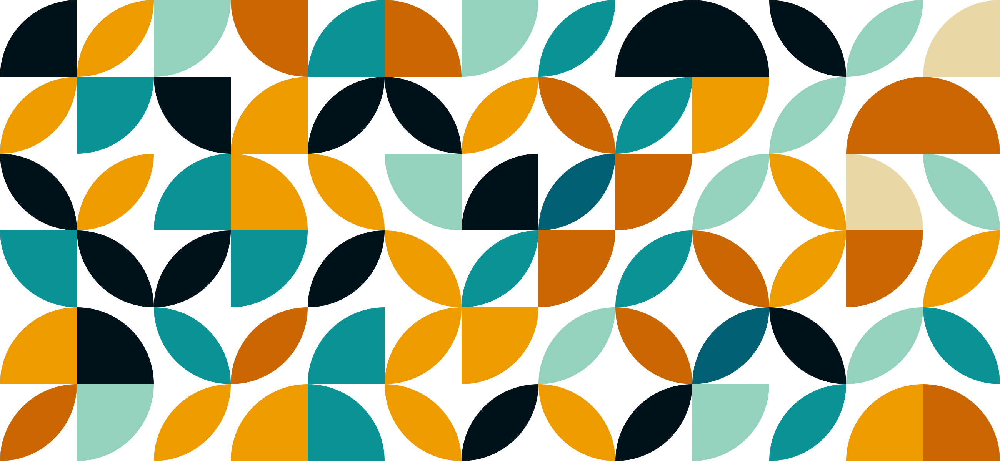

Creative Coding
SVG Shape Generator
An interactive design tool built with Vanilla JavaScript.

The Concept
Born from a desire to create custom browser backgrounds without relying on heavy design software, I built a browser-based "playground." The goal was to democratize asset generation, allowing users to create high-resolution geometric patterns for web or print instantly.
The Engineering
While libraries like p5.js exist, I chose a zero-dependency approach using Vanilla JavaScript and the DOM API. This ensured the application remained lightweight (under 50kb) and highly performant on mobile devices.
Technical Challenges
The most complex aspect was the export pipeline. Browsers render SVGs as vectors, but users often need raster images.
-
Dynamic Rendering: Using
document.createElementNSto programmatically build SVG paths based on a configurable grid matrix. - Image Export: I implemented a pipeline that serializes the SVG XML, draws it onto an HTML5 Canvas, and forces a download of the resulting high-res PNG blob.
Interface Design
The UI floats above the artwork, offering a "Theming Engine" that allows users to swap between presets like 'Neon Glow' or 'Ocean Deep' instantly.